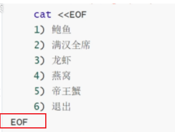
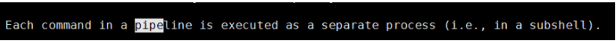

Linux: Linux文件管理和IO重定向
- TAGS: Linux
摘要：本文介绍Linux文件管理和IO重定向
文件管理和IO重定向
内容概述
- 文件系统目录结构
- 创建和查看文件
- 复制、转移和删除文件
- 软和硬链接
- IO 重定向和管道
文件系统目录结构
FHS文件系统
FHS(Filesystem Hierarchy Standard: 文件系统层次化标准)，是由Linux基金会维护的，帮助发行版厂商和开发者们使用 共同的标准来约定其发行的Linux系统或开发的软件遵守共同的文件和目录标准。
FHS是多数Linux版本采用的文件组织形式，采用树形结构组织文件。FHS定义了系统中每个区域的用途、所需要的最小构成的文件和目录，同时还给出了例外处理和矛盾处理。
文件系统相关概念：
文件系统是层级结构；有索引；
以/为原初起点 倒置树状结构
例如/dev/pts/2 —>最左侧/: 表示根目录；其它的/: 表示路径分隔符
Linux的路径分隔符是/ Windows的路径分隔符是
文件的路径表示方法：
绝对路径：从根开始表示出的路径
相对路径：从当前位置开始表示出的路径
文件名使用法则：
文件名法则：
- 严格区分字符大小写：file1,File1,FILE1表示不同文件
- 目录也是文件，在同一路径下，两个文件不能同名
- 支持使用除/以后的任意字符 当然你不能用 / 和空做为文件名，如touch xx/xx 创建这样的文件名不 可以，\转义
- 最长不能超过255个字符。
- 以. 开头的文件为隐藏文件
- 用户有家目录：home。用户的起始目录：普通用户管理文件的位置。
工作目录：
/abc/aa/bb
bashname(基名):最右侧的文件或者目录名
dirname(目录名):bashname左侧的路径
获取基名和目录名的命令：basename, dirname
~]# basename /PATH/TO/SOMEFILE SOMEFILE ~]# dirname /PATH/TO/SOMEFILE /PATH/TO
- 其它
- 包括路径在内文件名称最长4095个字节
- 蓝色–>目录 绿色–>可执行文件 红色–>压缩文件 浅蓝色–>链接文件 灰色–>其他文件 （/etc/DIR_COLORS 定义后缀颜色）
- 除了斜杠和NUL,所有字符都有效.但使用特殊字符的目录名和文件不推荐 使用，有些字符需要用引号来引用
- 每个文件都有两类相关数据：元数据：metadata，即属性，
数据：data，即文件内容
stat filename
常见的文件系统目录功能
/boot #引导文件存放目录，内核文件(vmlinuz)、引导加载器(bootloader, grub)都存放于此目录 /bin #所有用户使用的基本命令；不能关联至独立分区，OS启动即会用到的程序 /sbin #管理类的基本命令；不能关联至独立分区，OS启动即会用到的程序 /lib #启动时程序依赖的基本共享库文件以及内核模块文件(/lib/modules) /lib64 #专用于x86_64系统上的辅助共享库文件存放位置 /etc #配置文件目录 /home/USERNAME #普通用户家目录 /root #管理员的家目录 /media #便携式移动设备挂载点 /mnt #临时文件系统挂载点 /dev #设备文件及特殊文件存储位置 b: block device，随机访问 c: character device，线性访问 /opt #第三方应用程序的安装位置 /srv #系统上运行的服务用到的数据 /tmp #临时文件存储位置 /usr: #通用共享只读数据 bin: 保证系统拥有完整功能而提供的应用程序 sbin: lib：32位使用 lib64：只存在64位系统 include: C程序的头文件(header files) share：结构化独立的数据，例如doc, man等 local：第三方应用程序的安装位置 bin, sbin, lib, lib64, etc, share /var #variable data files 可变数据目录 cache: 应用程序缓存数据目录 lib: 应用程序状态信息数据 local：专用于为/usr/local下的应用程序存储可变数据 lock: 锁文件 log: 日志目录及文件 opt: 专用于为/opt下的应用程序存储可变数据 run: 运行中的进程相关数据,通常用于存储进程pid文件 spool: 应用程序数据池 tmp: 保存系统两次重启之间产生的临时数据 /proc: #用于输出内核与进程信息相关的虚拟文件系统 /sys #用于输出当前系统上硬件设备相关信息虚拟文件系统 /selinux #security enhanced Linux，selinux相关的安全策略等信息的存储位置
应用程序的组成部分
二进制程序：/bin, /sbin, /usr/bin, /usr/sbin, /usr/local/bin, /usr/local/sbin 库文件：/lib, /lib64, /usr/lib, /usr/lib64, /usr/local/lib, /usr/local/lib64 配置文件：/etc, /etc/DIRECTORY, /usr/local/etc 帮助文件：/usr/share/man, /usr/share/doc, /usr/local/share/man,/usr/local/share/doc
CentOS 7 以后版本目录结构变化
- /bin 和 /usr/bin
- /sbin 和 /usr/sbin
- /lib 和/usr/lib
- /lib64 和 /usr/lib6
范例：
[root@centos8 ~]#ls /bin /sbin /lib /lib64 -ld lrwxrwxrwx. 1 root root 7 May 11 2019 /bin -> usr/bin lrwxrwxrwx. 1 root root 7 May 11 2019 /lib -> usr/lib lrwxrwxrwx. 1 root root 9 May 11 2019 /lib64 -> usr/lib64 lrwxrwxrwx. 1 root root 8 May 11 2019 /sbin -> usr/sbin #centos8之前这些目录都独立的 [root@centos6 ~]#ls /bin /sbin /lib /lib64 -ld dr-xr-xr-x. 2 root root 4096 Mar 20 09:14 /bin dr-xr-xr-x. 11 root root 4096 Dec 12 2018 /lib dr-xr-xr-x. 9 root root 12288 Mar 20 09:13 /lib64 dr-xr-xr-x. 2 root root 12288 Mar 20 09:14 /sbin [root@ubuntu1804 ~]#ll /bin /usr/bin -d drwxr-xr-x 2 root root 4096 Jan 12 18:41 /bin/ drwxr-xr-x 2 root root 24576 Jan 12 18:42 /usr/bin/
Linux下的文件类型
#命令ls -l中的第1位中表示文件类型： -：常规文件；即f; d：directory,目录文件； b：block device,块设备文件，支持以"block"为单位进行随机访问 c：character device,字符设备文件，执行以"character"为单位进行线性访问 l：symbolic link，符号连接文件；软连接文件；类似于Windows下的快捷方式 p：pipe，命名管道；解决多个程序访问一个文件所造成的错误，FIFO(first-in-first-out) . ls -l /run/ s：socket，套接字文件；通常被用在网络上的数据连接，两个进程通信时套接(插座),主要用于服务
范例：如/dev下10，175是用来表示设备号，
c：character device,字符设备文件，执行以"character"为单位进行线性访问
major number：主设备号，用标识设备类型，进而确定要加载的驱动程序
minor number：次设备号，用于标识同一类型中的不同的设备
8位二进制：0-255
~]# ls -l /dev
crw-rw----. 1 root video 10, 175 12月 10 17:21 agpgart
查看文件类型的命令：file FILENAM
创建各类型文件
普通文件： touch filename 目录： mkdir dirname 符号链接： $ ln -s filename linkname FIFO管道文件: mknod fifo p 字符特殊文件： mknod /dev/ccc c 20 5 块特殊文件： mknod /dev/sdb b 16 8 socket文件： mksock sock 如果没有mksock命令，使用nc命令进行创建： nc -UI ./sock NB: 上面所有以#开头的示例，可能需要root权限。
linux 系统中文件类型颜色标识
linux系统中，每种颜色都有对应的含义，可以提供文件在终端中显示的颜色，来判断是什么类型的文件。
颜色与文件类型对应关系，由配置文件定义，可更改(此处的文件类型，可以理解为文件格式)
#CentOS/Rocky vim /etc/DIR_COLORS FIFO 40;33 # pipe SOCK 01;35 # socket DOOR 01;35 # door BLK 40;33;01 # block device driver CHR 40;33;01 # character device driver ORPHAN 40;31;01 # symlink to nonexistent file, or non-stat'able file MISSING 01;05;37;41 # ... and the files they point to SETUID 37;41 # file that is setuid (u+s) SETGID 30;43 # file that is setgid (g+s) CAPABILITY 30;41 # file with capability STICKY_OTHER_WRITABLE 30;42 # dir that is sticky and other-writable (+t,o+w) OTHER_WRITABLE 34;42 # dir that is other-writable (o+w) and not sticky STICKY 37;44 # dir with the sticky bit set (+t) and not other-writable # This is for files with execute permission: EXEC 01;32 #ubuntu 是在 dirclors 命令定义的 env |grep LS_COLORS [ec2-user@ip-10-0-129-226 ~]$ dircolors -p # Configuration file for dircolors, a utility to help you set the # LS_COLORS environment variable used by GNU ls with the --color option. # Copyright (C) 1996-2020 Free Software Foundation, Inc. # Copying and distribution of this file, with or without modification, # are permitted provided the copyright notice and this notice are preserved. # The keywords COLOR, OPTIONS, and EIGHTBIT (honored by the # slackware version of dircolors) are recognized but ignored. # Below are TERM entries, which can be a glob patterns, to match # against the TERM environment variable to determine if it is colorizable. TERM Eterm TERM ansi TERM *color* TERM con[0-9]*x[0-9]* TERM cons25 ...... #无法直接修改, 可以类似于别名，加在.bashrc中即可 cat <<\EOF> ~/.bash_profile eval "$(dircolors)" EOF
管道文件： 所谓管道，是指用于连接一个读进程和一个写进程，以实现它们之间通信的共享文件，又称pipe文件。单向的，如a往管道中写，b往管道中读。
套接字文件：Socket本身有插座的意思，在Unix/Gnu Linux环境下，用于表示进程之间网络通信的特殊文件类型。本质为内核借助缓冲区形成的伪文件。双向的。
文件操作命令
显示工作目录 PWD
pwd：printing working directory 显示工作目录
使用pwd命令可以显示当前的工作目录，该命令很简单，直接输入pwd即可，后面 不带参数。
-P 显示真实路径 -L 显示链接路径（默认）
绝对和相对路径
绝对路径
- 以正斜杠/ 即根目录开始
- 完整的文件的位置路径
- 可用于任何想指定一个文件名的时候
相对路径名
- 不以斜线开始
- 一般情况下，是指相对于当前工作目录的路径，特殊场景下，是相对于某目录的位置
- 可以作为一个简短的形式指定一个文件名
基名：basename，只取文件名而不要路径
目录名：dirname，只取路径，不要文件名 范例:
[root@centos8 bin]#basename /etc/sysconfig/network network [root@centos8 bin]#dirname /etc/sysconfig/network /etc/sysconfig [root@centos8 ~]#dirname /etc/sysconfig/network-scripts/ifcfg-eth0 /etc/sysconfig/network-scripts [root@centos8 ~]#basename /etc/sysconfig/network-scripts/ifcfg-eth0 ifcfg-eth0
切换目录cd
change directory
所谓工作目录，就是当前操作所在的目录。
用户在使用Unix/Linux的时候，经常需要更换工作目录。cd命令可以帮助用户切 换工作目录。
后面可跟绝对路径，也可以跟相对路径。如果省略目录，则默认切换到当前用户 的主目录。
[root@node01 ~]# type cd cd is a shell builtin [root@node01 ~]# help cd cd: cd [-L|[-P [-e]]] [dir] #常用选项 -L #切换至链接目录，默认选项 -P #切换至实现目录，而非链接目录
2.3.1 cd的用法
cd [/PATH/TO/SOMEDIR]
cd : 切换回家目录；注意：bash中，~表示家目录 cd ~：切换回自己的家目录 cd ~USERNAME: 切换至指定的家目录 注意，只有管理员才能随便切换指定家目录 cd -: 在上一次所在目录与当前目录之间来回切换 cd . : 当前目录 cd .. : 上级目录
2.3.2 相关的环境变量：
为什么cd能在当前目录和上次目录来回切换？因为shell有2个环境变量保存这个值
$PWD:当前工作目录 $OLDPWD：上一次的工作目录
如从/root目录切换到/目录
[root@node01 ~]# echo $PWD /root [root@node01 ~]# cd / [root@node01 /]# echo $PWD / [root@node01 /]# echo $OLDPWD /root [root@node01 /]#
zoxide cd 优化
bash 中 cd 很不方便，没有历史，跳转模糊。zoxide 可以提高你的工作效率.
它会记住您最常使用的目录，因此您只需敲击几下键盘就可以“跳转”到这些目录。
https://github.com/ajeetdsouza/zoxide
范例：
root@myhost:~# z /tmp/
root@myhost:~# mkdir -p foo/bar/{apple,orange/{abc-bi,xyz},food/{abc,xyz}}
root@myhost:/tmp# tree foo
foo
└── bar
├── apple
├── food
│ ├── abc
│ └── xyz
└── orange
├── abc-bi
└── xyz
8 directories, 0 files
root@myhost:/tmp# z foo/bar/apple/
root@myhost:/tmp/foo/bar/apple# z ../food/abc/
root@myhost:/tmp/foo/bar/food/abc# z /tmp/foo/bar/orange/abc-bi/
# input `abc` only would match `/tmp/foo/bar/food/abc`
root@myhost:/tmp/foo/bar/orange/abc-bi# z abc
# more specific word, with `-` suffix, then jump to `abc-bi`
root@myhost:/tmp/foo/bar/food/abc# z abc-
root@myhost:/tmp/foo/bar/orange/abc-bi# z /tmp/foo/bar/food/xyz/
root@myhost:/tmp/foo/bar/food/xyz# z /tmp/foo/bar/orange/xyz
# specify multiple path segments
root@myhost:/tmp/foo/bar/orange/xyz# z food xyz
# choose alternatives for `xyz` interactively
root@myhost:/tmp/foo/bar/food/xyz# zi xyz
列出指定目录下的内容-ls
ls [OPTION]… [FILE] …
2.4.1 常用参数
-a：显示所有文件，包括隐藏文件
-A：显示除.(当前目录)和..(上级目录)之外的文件
-i, –inode 印出每个文件的 inode 号
-l：--long，长格式列表，显示文件详细属性信息
-d：仅显示当前目录；通常结合-l使用,显示文件和目录本身
-1：(数值一)，以换行符分隔文件, 即一行显示一个。当然，和-m或-l(小写字母)是冲突的
-t：按修改时间排序内容。不加任何改变顺序的选项时，ls默认按照字母顺序排序
-r：reverse，逆序显示
-R：recursive,递归显示;
-F或--classify 在执行文件，目录，Socket，符号连接，管道名称后面，各自加上*, /, =, @, | 号。
-h, –human-readable 以容易理解的格式列出文件大小 (例如 1K 234M 2G)
其实选项:
-S : 按文件大小排序，默认降序排序
-U 按目录存放顺序显示
-X 按文件后缀排序
-p或--file-type 此参数的效果和指定"-F"参数类似，但不会在执行文件名称后面加上"*"号。只是在目录后面添加/
-R, –recursive 同时列出所有子目录层
--time-style={full-iso, long-iso, iso, locale} : 以不同的时间格式输出。long-iso效果最好
--full-time : 显示完整的时间
--time={atime|mtime|ctime} 读时间 、修改时间、状态元数据更新时间
-m：使用逗号分隔各文件，当然，只适用于未使用长格式(ls -l)的情况
-大I pattern：忽略被pattern匹配到的文件
-Z: 显示扩展属性
常用组合：
ls -alF
别名：
cat <<\EOF> /etc/profile.d/alias.sh
alias ll='ls -alF'
alias ls='ls --color=auto'
alias l.='ls -d .* --color=auto' #仅显示隐藏文件
alias la='ls -A'
alias l='ls -CF'
EOF
注意，ls以 -h 显示文件大小时，一般显示的都是不带B的单位，如K/M/G，它
们的转换比例是1024，如果显示的都是带了B的，如KB/MB/GB，则它们的转换比
例为1000而非1024，一般很少显示带B的大小。
不得不说，ls本身不能显示出文件的全路径名是一大缺陷，不过好在使用find命 令可以很简单的就获取到。
[root@node01 ~]# ls -l --time-style=long-iso -rw-r--r-- 1 root root 0 2017-12-12 06:36 123 -rw-------. 1 root root 1418 2017-03-24 18:42 anaconda-ks.cfg [root@node01 ~]# ll --full-time # 显示完整的时间 total 1451180 drwxr-xr-x 2 root root 6 2018-01-09 07:31:04.579132550 +0800 07-31-04 ll . ll . -a ll ./ -a
2.4.2 文件详细属性信息
-l ：–long，长格式列表，显示文件详细属性信息
[root@node01 ~]# ls -l -rw-r--r--. 1 root root 30499 Dec 8 12:04 Xorg.0.log #第1列中最后的.点，是selinux开启状态显示的。 编辑/etc/selinux/config修改SELINUX=disabled， #重新登录后续创建的新文件就没有点了。
第1列，文件类型和文件权限信息
-：文件类型，-,d,b,c,l,s,prw-：左3位，文件属主的权限 r–：中3位，文件属组的权限；r--：右3位，其他用户（非属主、属组）的权限拓展第1位中表示文件类型：
-：常规文件；即f; d：directory,目录文件； b：block device,块设备文件，支持以"block"为单位进行随机访问 c：character device,字符设备文件，执行以"character"为单位进行线性访问 major number：主设备号，用标识设备类型，进而确定要加载的驱动程序 minor number：次设备号，用于标识同一类型中的不同的设备 8位二进制：0-255 l：symbolic link，符号连接文件；软连接文件；类似于Windows下的快捷方式 p：pipe，管道文件；解决多个程序访问一个文件所造成的错误，FIFO(first-in-first-out) s：socket，套接字文件；通常被用在网络上的数据连接，两个进程通信时套接(插座),主要用于服务提供的。 查看文件类型的命令：file FILENAME如/dev下10，175是用来表示设备号，
~]# ls -l /dev crw-rw----. 1 root video 10, 175 12月 10 17:21 agpgart
第2列，数字表示文件被硬连接的次数
1:数字表示文件被硬连接的次数
- 第3列， 文件的属主 root：文件的属主
- 第4列， 文件的属组 root：文件的属组
第5列，数字表示文件的大小，单位是字节
30499：数字表示文件的大小，单位是字节
如/dev下10，175是用来表示设备号，
~]# ls -l /dev crw-rw----. 1 root video 10, 175 12月 10 17:21 agpgart major number：主设备号，用标识设备类型，进而确定要加载的驱动程序 minor number：次设备号，用于标识同一类型中的不同的设备 8位二进制：0-255第6列， 文件最近一次被修改的时间
Dec 8 12:04：文件最近一次被修改的时间第7列，文件名 Xorg.0.log：文件名
如，显示inode号命令ls -li
2.4.3 文件属性中的时间属性
我们在 ls 这个命令的介绍时，有稍微提到每个文件在linux底下都会记录许多 的时间参数，其实是有三个主要的变动时间，那么三个时间的意义是什么呢？
在默认的情况下，ls 显示出来的是该文件的 mtime，也就是这个文件的内容上 次被更动的时间。
modification time (mtime)：当该文件的『内容数据』变更时，就会升级这个时间！内容数据指的 是文件的内容，而不是文件的属性或权限喔！
status time (ctime)：当该文件的『状态(status)』改变时，就会升级这个时 间，举例来说，像是权限与属性被更改了，都会升级这个时间啊。
access time (atime)：当『该文件的内容被取用』时，就会升级这个读取时间 (access)。举例来说，我们使用 cat 去读取 /etc/man.config ，就会升级该文 件的 atime 了。
这是个挺有趣的现象，举例来说，我们来看一看你自己的 /etc/man.config 这个文件的时间吧！
[root@www ~]# ls -l /etc/man.config -rw-r--r-- 1 root root 4617 Jan 6 2007 /etc/man.config [root@www ~]# ls -l --time=atime /etc/man.config -rw-r--r-- 1 root root 4617 Sep 25 17:54 /etc/man.config [root@www ~]# ls -l --time=ctime /etc/man.config -rw-r--r-- 1 root root 4617 Sep 4 18:03 /etc/man.config
2.4.4 常用组合
ls -ltr 查看到最近更新的文件
应用 1 只显示目录
# 1. ls -d * # 2. find . -type d -maxdepth 1 # 3. ls -F | grep '/$' # 使用linux管道命令，grep查找 '/$' 以/结尾的，也即是目录 # 4. ls -l | grep '^d'
生产
# Linux Shell实现仅保留最新的文件|删除最旧的文件|Bash ls -t | awk ‘{if(NR>16){print $0}}’ |xargs rm -f
说明：
ls 查看不同后缀文件时的颜色由 /etc/DIR_COLORS和@LS_COLORS变量定义
查看文件状态 stat
文件相关信息：metadata, data
每个文件有三个时间戳：
- access time 访问时间，atime，读取文件内容
- modify time 修改时间，mtime，改变文件内容（数据）
- change time 改变时间，ctime，元数据发生改变
[root@centos8 ~]#stat /etc/passwd File: /etc/passwd Size: 1306 Blocks: 8 IO Block: 4096 regular file Device: 802h/2050d Inode: 134792556 Links: 1 Access: (0644/-rw-r--r--) Uid: ( 0/ root) Gid: ( 0/ root) Access: 2019-12-09 20:37:12.830991350 +0800 Modify: 2019-12-09 20:37:12.826991351 +0800 Change: 2019-12-09 20:37:12.826991351 +0800 Birth: -
确定文件内容 file
文件可以包含多种类型的数据，使用file命令检查文件的类型，然后确定适当的 打开命令或应用程序使用
格式：
file [options] <filename>...
常用选项:
-b 列出文件辨识结果时，不显示文件名称 -f filelist 列出文件filelist中文件名的文件类型 -F 使用指定分隔符号替换输出文件名后默认的”:”分隔符 -L 查看对应软链接对应文件的文件类型 -s 读取块文件或字符特殊文件类型 --help 显示命令在线帮助
范例：windows的文本格式和Linux的文本格式的区别
[root@centos8 data]#cat linux.txt a b c [root@centos8 data]#cat win.txt a b c[root@centos8 data]#file win.txt linux.txt win.txt: ASCII text, with CRLF line terminators linux.txt: ASCII text cat -A linux.txt cat -A win.txt man ascii #man-pages包 表格 为方便起见，我们给出了更紧凑的十六进制和十进制表格。 2 3 4 5 6 7 30 40 50 60 70 80 90 100 110 120 ------------- --------------------------------- 0: 0 @ P ` p 0: ( 2 < F P Z d n x 1: ! 1 A Q a q 1: ) 3 = G Q [ e o y 2: " 2 B R b r 2: * 4 > H R \ f p z 3: # 3 C S c s 3: ! + 5 ? I S ] g q { 4: $ 4 D T d t 4: " , 6 @ J T ^ h r | 5: % 5 E U e u 5: # - 7 A K U _ i s } 6: & 6 F V f v 6: $ . 8 B L V ` j t ~ 7: ´ 7 G W g w 7: % / 9 C M W a k u DEL 8: ( 8 H X h x 8: & 0 : D N X b l v 9: ) 9 I Y i y 9: ´ 1 ; E O Y c m w A: * : J Z j z B: + ; K [ k { C: , < L \ l | D: - = M ] m } E: . > N ^ n ~ F: / ? O _ o DEL #hexdump 查看16进制内容 [root@centos8 data]#hexdump -C linux.txt 00000000 61 0a 62 0a 63 0a |a.b.c.| 00000006 [root@centos8 data]#hexdump -C win.txt 00000000 61 0d 0a 62 0d 0a 63 |a..b..c| 00000007 #安装转换工具 [root@centos8 data]#dnf -y install dos2unix #将Windows的文本格式转换成的Linux文本格式 [root@centos8 data]#dos2unix win.txt dos2unix: converting file win.txt to Unix format... [root@centos8 data]#file win.txt win.txt: ASCII text #将Linux的文本格式转换成Windows的文本格式 [root@centos8 data]#unix2dos win.txt unix2dos: converting file win.txt to DOS format... [root@centos8 data]#file win.txt win.txt: ASCII text, with CRLF line terminators
范例：转换文件字符集编码
#显示支持字符集编码列表 [root@centos8 ~]#iconv -l #windows10上文本默认的编码ANSI（GB2312） [root@centos8 data]#file windows.txt windows.txt: ISO-8859 text, with no line terminators [root@centos8 data]#echo $LANG en_US.UTF-8 #默认在linux无法正常显示文本内容 [root@centos8 data]#cat windows11.txt ▒▒▒▒▒▒[root@centos8 data]# #将windows10上文本默认的编码ANSI（GB2312）转换成UTF-8 [root@centos8 data]#iconv -f gb2312 windows.txt -o windows1.txt [root@centos8 data]#cat windows1.txt abc[root@centos8 data]#ll windows1.txt -rw-r--r-- 1 root root 12 Mar 23 10:13 windows1.txt [root@centos8 data]#file windows1.txt windows1.txt: UTF-8 Unicode text, with no line terminators #将UTF-8转换成windows10上文本默认的编码ANSI（GB2312） [root@centos8 data]#iconv -f utf8 -t gb2312 windows1.txt -o windows11.txt [root@centos8 data]#file windows11.txt windows11.txt: ISO-8859 text, with no line terminators
范例:
#将windows10上文本默认的编码ANSI（GB2312）转换成UTF-8 [15:34:50 root@centos8 ~]#iconv -f gb2312 win.txt -o win2.txt [15:34:50 root@centos8 ~]#file linux.txt linux.txt: ASCII text [15:34:31 root@centos8 ~]#file windows.txt windows.txt: ASCII text, with CRLF line terminators #将windows的文本格式转换成Linux的文本格式 [15:35:26 root@centos8 ~]#dos2unix windows.txt dos2unix: converting file windows.txt to Unix format... [15:36:00 root@centos8 ~]#file windows.txt windows.txt: ASCII text
范例：
[root@centos8 ~]#cat list.txt /etc/ /bin /etc/issue [root@centos8 ~]#file -f list.txt /etc/: directory /bin: symbolic link to usr/bin /etc/issue: ASCII text
范例：读取磁盘信息
~]# file -sL /dev/vdb /dev/vdb: Linux rev 1.0 ext4 filesystem data, UUID=75dece20-4563-4958-ad4e-452be4ed817c (needs journal recovery) (extents) (64bit) (large files) (huge files) # 判断磁盘是否存在未格式化，输出not exit表示磁盘被格式化了 file -sL /dev/vdb | grep -v filesystem|grep -v partition||echo 'not exist'
bash基础特性-文件名通配glob
globbing：文件名通配(整体文件名匹配，而非部分)
文件的通配机制：编写一种匹配模式，能够实现对多个文件名进行通配；
匹配模式：对于文件名通配当中，如果我们要编写匹配模式就会用到元字符metacharacters。
元字符指的是一个字符出现以后，它并不表示文件本身，而是用来匹配一定范围 内的或者指定符合条件的字符；
. 包含隐藏文件的所有文件 * 配置任意长度的任意字符。但匹配不了 . 点开头的文件，即不包含隐藏文件。 ? 匹配任意单个字符 ~ 当前用户家目录 ~me 用户me家目录 ~+和. 当前工作目录 ~- 前一个工作目录 [] 匹配指定范围内的任意单个字符 [^] 匹配指定范围外的任意单个字符 ** 任意子目录。 如 ls **/*.py
[] 有几种特殊格式：
[a-z] : 匹配a到z间任意一个字符， [A-Z] : 匹配A到Z间任意一个字符， [0-9] : 匹配0到9之间任意一个数字 [a-zA-Z0-9] : 匹配aA到zZ、0到9之间任意一个，。如[abcxyz]表示从abcxyz中匹配任意一个字符
在Linux系统中预定义的字符类：man 7 glob
[:alpha:]：匹配字母(阿额儿发，等价于[a-zA-Z]
[:digit:]：匹配数字，等价于[0-9]
[:xdigit:]：匹配十六进制数，等价于[0-9a-fA-F]
[:upper:]：匹配大写字母(阿坡儿额)，等价于[A-Z]
[:lower:]：匹配小写字母(路我额)，等价于[a-z]
[:alnum:]：匹配数字或字母，等价于[0-9a-zA-Z]
[:blank:]：匹配空白，包括空格和制表符
[:space:]：匹配空格，包括新行、空格、制表符、换行符、回车符等各种类型的空白
[:punct:]：匹配所有标点符号(怕可特。包括：! ' " ` # $ % & ( ) * + , . - _ / : ; < = > ? @ [ \ ] ^ { | } ~
[:graph:]：非空字符。绘图类。包括：大小写字母、数字和标点符号。等价于[:alnum:]+[:punct:]
[:print:]：非空字符（包括空格）。打印字符类。包括：大小写字母、数字、标点符号和空格。等价于[:alnum:]+[:punct:]+space
[:cntrl:]：控制字符类。在ASCII中，这些字符的八进制代码从000到037，还包括177(DEL)。代表键盘上的控制键，包括 CR, LF, TAB, Del ..等
[:blank:]: 空白字符：空格和制表符
范例： pa[0-9][0-9] : pa后面跟2个数字
2[0-9][0-9] : 表示200-299之间的数字
范例：
#１. * pa* : 所有以pa开头的文件。像pa,paa*,passwd都符合。 *pa* : 文件名当中任意位置包含pa字符串的文件。 *pa : 文件名中以pa结尾的 *p*a* : 文件名中出现字符pa或p和a的文件，这个描述是p在a之前的。 ~]# ls /var/log/*.log #列出/var/log下所有以 .log 结尾的文件 #2 ? pa? : 文件名中有3个字符，其中有pa和一个任意字符。像pa不符合, paa符合, passwd不符合 ??pa : 文件名以pa结尾，前面可以出现任意2个字符 p?a : 文件名pa之间出现任意单个字符 p?a? : 文件名p和a后都出现一个字符 # []匹配指定范围内的任意单个字符 例如，文件名中出现标点符号 , 逗号匹配 ]# touch p,a ]# ls p[[:punct:]]a 例如，文件名中出现空白字符匹配 ]# touch p\ a ]# ls ?[[:space:]]? #4 [^]匹配指定范围外的任意单个字符 [^[:upper:]] : 除大写字母以外的所有字符 [^0-9] : 除数字以外的所有字符 [^[:alnum:]]：所有非数字和字母的 [root@centos8 data]#ls file[a-c].txt #小写 >大写的顺序 filea.txt fileA.txt fileb.txt fileB.txt filec.txt [root@centos8 data]#ls file[C-E].txt fileC.txt filed.txt fileD.txt filee.txt fileE.txt [root@centos8 data]#ls file[wang].txt filea.txt fileg.txt filen.txt filew.txt [root@centos8 data]#ls file[^wang].txt
范例：显示当前目录下隐藏文件
[root@centos8 ~]#ls -d /etc/*/ alias l.='ls -d .* --color=auto' [root@centos8 ~]#l. #只显示隐藏文件
范例：显示当前目录下的任意次目录下的*.py文件
ubuntu:/usr/lib/python3/dist-packages# ls **/*.py apport/crashdb.py DistUpgrade/distro.py pyasn1_modules/rfc1901.py rich/_loop.py
范例：
#1：显示/var目录所有以l开头，以一个小写字母结尾，且中间出现以为任意字符的文件或目录 ls -d /var/l?[[:lower:]] #2：显示/etc目录下，以任意以为数字开头，且以非数字结尾的文件或目录； ls -d /etc/[0-9]*[^0-9] ls -d /etc/[[:digit:]]*[^[:digit:]] #3：显示/etc目录下，以非字母开头，后面跟一个字母及其他任意长度任意字符的文件或者目录； ls -d /etc/[^a-z][a-z]* #4：复制/etc目录下，所有以m开头，以非数字结尾的文件或目录至/tmp/m目录； ~]# mkdir /tmp/m ~]# cp -r /etc/m*[^0-9] /tmp/m/ #5：复制/usr/share/man目录下，所有以man开头，后跟一个数字结尾的文件或者目录至/tmp/man/目录下； cp -ap /usr/share/man/man*[0-9] /tmp/man #6：复制/etc目录下，所有以.conf结尾，且以m,n,rp开头的文件或目录至/tmp/conf.d目录下； ~]# ls -d /etc/[mnrp]*.conf /tmp/conf.d/ 注意：文件名中包括空白字符就需要\转移来匹配
范例：[]和{}
[ec2-user@ip-10-0-129-226 .jasper]$ touch f{3..5}
[ec2-user@ip-10-0-129-226 .jasper]$ ls
f3 f4 f5
[ec2-user@ip-10-0-129-226 .jasper]$ ls f[1-5] #提前判断有没有文件，再显示
f3 f4 f5
[ec2-user@ip-10-0-129-226 .jasper]$ ls f{1..5} #实际是命令展开 ls f1 f2 f3 f4 f5
ls: cannot access 'f1': No such file or directory
ls: cannot access 'f2': No such file or directory
f3 f4 f5
创建空文件和刷新时间 touch
touch命令可以用来创建空文件或刷新文件的时间
格式： touch [OPTION]... FILE...
选项说明：
-a 仅改变 atime和ctime -m 仅改变 mtime和ctime -t [[CC]YY]MMDDhhmm[.ss] 指定atime和mtime的时间戳 ,如：07081556代表7月8号15点56分 -c 如果文件不存在，则不予创建
文件时间更新策略
- 上一次的atime到当前超过24小时，会更新atime
- mtime或ctime大于atime，会更新atime
因为atime, ctime, mtime更新都会消耗IO资源，而一个系统中，大多数文件都是读多写少。如果 每一次访问文件都要更新atime，则会加重系统负载。
范例:
[root@centos8 data]#touch f1.txt [root@centos8 data]#ll total 0 -rw-r--r-- 1 root root 0 Mar 23 11:30 f1.txt [root@centos8 data]#ll /etc/issue -rw-r--r--. 1 root root 23 Jan 2 23:21 /etc/issue [root@centos8 data]#touch /etc/issue [root@centos8 data]#ll /etc/issue -rw-r--r--. 1 root root 23 Mar 23 11:31 /etc/issue [root@centos8 data]#stat /etc/issue File: /etc/issue Size: 23 Blocks: 8 IO Block: 4096 regular file Device: 802h/2050d Inode: 134345998 Links: 1 Access: (0644/-rw-r--r--) Uid: ( 0/ root) Gid: ( 0/ root) Access: 2020-03-23 11:31:20.030291332 +0800 Modify: 2020-03-23 11:31:20.030291332 +0800 Change: 2020-03-23 11:31:20.030291332 +0800 Birth: - [root@centos8 data]#date Fri Dec 13 16:11:55 CST 2019 [root@centos8 data]#touch `date -d "-1 day" +%F_%T`.log [root@centos8 data]#ls 2019-12-12_16:11:48.log [root@centos8 data]#touch $(date -d "1 year" +%F_%T).log [root@centos8 data]#ls 2019-12-12_16:11:48.log 2020-12-13_16:13:11.log
范例：修改文件时间戳-touch
# touch a.log # stat a.log Access: 2021-02-08 00:44:51.415681426 +0800 Modify: 2021-02-08 00:44:51.415681426 +0800 Change: 2021-02-08 00:44:51.415681426 +0800 # touch -at 使用参数更新访问时间 # touch -at 02021400 a.log [root@centos7 ~/learn] eth0 = 10.0.1.86 # stat a.log Access: 2021-02-02 14:00:00.000000000 +0800 Modify: 2021-02-08 00:44:51.415681426 +0800 Change: 2021-02-08 01:00:13.840403406 +0800 # touch -m 只更新修改时间 # touch -mt 02051101 a.log # stat a.log Access: 2021-02-02 14:00:00.000000000 +0800 Modify: 2021-02-05 11:01:00.000000000 +0800 Change: 2021-02-08 01:02:05.930192368 +0800 #指定年月日时分秒 touch -t 1908081042.30 .1.txt [root@jump test]# ls -al --full-time -rw-r--r--. 1 root root 0 2019-08-08 10:42:30.000000000 +0000 .1.txt #指定年月日时分秒 touch -t 202001151042.30 .1.txt [root@jump test]# ls -al --full-time -rw-r--r--. 1 root root 0 2020-01-15 10:42:30.000000000 +0000 .1.txt #指定月日时分 touch -mt 02051101 .1.txt [root@jump test]# ls -al --full-time -rw-r--r--. 1 root root 0 2025-02-05 11:01:00.000000000 +0000 .1.txt
文件管理工具：cp,mv,rm
复制文件和目录 cp
源文件，目标文件
单源复制 : cp [OPTION]... [-T] SOURCE DEST 多源复制 : cp [OPTION]... SOURCE... DIRECTORY cp [OPTION]... -t DIRECTORY SOURCE... 复制只是复制文件的数据，从源文件中抽取数据流，一行一行的填充到目标文件中去。
1.1 单源复制：
如果目标DEST不存在：则事先创建文件，并复制源文件的数据流到DEST中；
如将/etc/fstab文件内容复制到/tmp/hi.txt中，hi.txt事先不存在
[root@node01 ~]# cp /etc/fstab /tmp/hi.txt
如果DEST存在: 如果DEST是非目录文件：则会复制覆盖目标文件；
如果DEST是目录文件：则现在DEST目录下创建一个与源文件同名的文件，并 复制其数据流。
1.2 多源复制：
如果DEST不存在：错误
[root@node01 ~]# cp /etc/{fstab,issue} /tmp/hi.txt cp: target '/tmp/hi.txt' is not a directory- 如果DEST是非目录文件：错误；
[root@node01 ~]# cp /etc/{fstab,issue} /tmp/hi.txt
cp: target '/tmp/hi.txt' is not a directory
- 如果DEST是目录文件：分别复制每个文件至目标目录中，并保持原名；
1.3 常用选项：
-i : 交互式复制，即覆盖之前提醒用户确认； -n : 如果目标文件存在，则跳过此文件复制 -s : 对源文件建立符号连接，而非复制文件。 -f : 强制覆盖目标文件； -r : 递归复制目录； -d : 等同于 --no-dereference --preserve=links，复制符号连接本身，而非其指向的源文件； -a : -dR --preserve=all，archive，用于归档； --preserve[=属性列表 保持指定的属性(默认：模式,所有权,时间戳)] 属性列表有： mode : 保留权限属性 ownership : 属主和属组 timestamp : 时间戳 context : 安全标签 links : 连接属性 xattr : 扩展属性 all : 上述所有属性 -p 等同--preserv=mode,ownership,timestamp -f --force -u --update 只复制源比目标更新文件或目标不存在的文件 -b 目标存在，覆盖前先备份，默认形式为 filename~ ,只保留最近的一个备份 --backup=numbered 目标存在，覆盖前先备份加数字后缀，形式为 filename.~#~ ，可以保留多个版本
注意：命令可以有别名：别名可以与原名相同，此时原名就被隐藏了，如果要运行原命令，则使用\COMAND
如复制/etc/fstab文件到/tmp/hi.txt文件，引用原命令则使用\cp
[root@node01 ~]# alias cp alias cp='cp -i' [root@node01 ~]# \cp /etc/fstab /tmp/hi.txt [root@node01 ~]# /usr/bin/cp /etc/fstab /tmp/hi.txt
如果file是符号连接文件，直接用cp复制的是源文件的内容到file符号连接文件 中去。如果不想这个做则使用-d选项。
[root@node01 ~]# ll /etc/system-release lrwxrwxrwx. 1 root root 14 Mar 24 2017 /etc/system-release -> centos-release [root@node01 ~]# cp /etc/system-release /tmp/ [root@node01 ~]# ll /tmp/system-release -rw-r--r-- 1 root root 38 Jan 11 07:00 /tmp/system-release [root@node01 ~]# cat /tmp/system-release CentOS Linux release 7.3.1611 (Core)
如，-d : 等于–no-dereference–preserve=links。如果源文件是软连接属性， 则复制软连接属性而文件本身
[root@node01 ~]# ln -sv /tmp/hi.txt /tmp/hi01.txt ‘/tmp/hi01.txt’ -> ‘/tmp/hi.txt’ [root@node01 ~]# cp -d /tmp/hi01.txt /tmp/hi02.txt [root@node01 ~]# ll /tmp/hi* lrwxrwxrwx 1 root root 11 Jan 11 06:46 /tmp/hi01.txt -> /tmp/hi.txt lrwxrwxrwx 1 root root 11 Jan 11 06:47 /tmp/hi02.txt -> /tmp/hi.txt -rw-r--r-- 1 root root 465 Jan 11 06:40 /tmp/hi.txt
1.4 其它选项：
-H : 跟随源文件中的命令行符号链接 -l : 对源文件建立硬连接，而非复制文件链接文件而不复制 -L : 总是跟随符号链接 -大P : 不跟随源文件中的符号链接 -小p : 等于--preserve=模式,所有权,时间戳一直复制过去 --reflink=auto # cp 命令可以单独为文件创建快照，如，[root@node01 logs]# cp --reflink=auto grub2.cfg grub2.cfg_snap
复制软连接对应的实体文件
cp -rl a b cp -rL a b
复制软连接文件
cp -dR path1 path2 rsync -rlpgoDz
范例：
# 复制目录下的隐藏文件 cp /etc/skel/.[^.]* /home/test # 复制目录下的所有文件，包含隐藏文件 cp -r /etc/skel/. /home/test cp -r /etc/skel /home/test # 复制目录下的所有文件, 不包含隐藏文件 cp -r /etc/skel/* /home/test
移动和重命名文件 mv rename
mv [参数] 源文件或目录 目标文件或目录 mv [OPTION]... [-T] SOURCE DEST mv [OPTION]... SOURCE... DIRECTORY mv [OPTION]... -t DIRECTORY SOURCE...
常用选项
-i：交互式删除，即覆盖之前提醒用户确认； -f:force -u ：若目标文件已存在，且 source 比较新，才会更新 (update) 比cp多了一步把原来的给删了 [root@node01 ~]# mv bashrc1 bashrc2 mvtest2 注意，如果有多个来源文件或目标，则最后一个目标文件一定是目录。意思是将所有的资料移动到该目录下。 --backup[=CONTROL]：如果目标文件已存在，则对该文件做一个备份，默认备份文件是在文件名后加上波浪线，如/b.txt~ -b：类似于--backup，但不接受参数, 默认备份文件是在文件名后加上波浪线，如/b.txt~ -n：如果目标文件已存在，则不覆盖已存在的文件 如果同时指定了-f/-i/-n，则后指定的生效
利用rename 可以批量修改文件名 格式： rename [options] …
范例：
#centos #为所有的conf文件加上.bak后缀： rename 'conf' 'conf.bak' f* #去掉所有的bak后缀： rename '.bak' '' *.bak #ubuntu f1.conf 换成 f1.conf.bak rename 's/conf$/conf.bak/' f*
删除文件 rm
rm [OPTION]… FILE…
-i : 交互式复制，即覆盖之前提醒用户确认； -f : 强制删除目标文件； -r : recurive递归删除 --no-preserve-root 删除/
删除目录 : rm -rf /PATH/TO/DIR
危险操作rm -fr / 或rm -fr /*
~]# rm -fr /
rm: 在"/" 进行递归操作十分危险
rm: 使用 --no-preserve-root 选项跳过安全模式
注意：所有不用的文件建议不要直接删除，而是移动至某个专用目录；(模拟回收站)
范例：删除特殊文件
touch ./-f [root@centos8 data]#rm -- -f # 删除-f文件 [root@centos8 data]#rm ./-f [root@centos8 data]#rm /data/-f [root@centos8 data]#touch '~' [root@centos8 data]#ls '~' [root@centos8 data]#rm -f ~ rm: cannot remove '/root': Is a directory [root@centos8 data]#rm -- ~ rm: cannot remove '/root': Is a directory [root@centos8 data]#rm -f ./~
删除隐藏文件 rm -fr .[^.]*
rm虽然删除了文件，但是被删除的文件仍然可能被恢复，在安全要求较高的场景 下，可以使用shred安全删除文件
shred格式 shred [OPTION]… FILE…
常见选项：
-z 最后一次覆盖添加0，以隐藏覆盖操作 -v 能够显示操作进度 -u 覆盖后截断并删除文件 -n # 指定覆盖文件内容的次数（默认值是3次）
范例
[root@centos8 ~]#shred -zvun 5 passwords.txt
shred: passwords.txt: pass 1/6 (random)...
shred: passwords.txt: pass 2/6 (000000)...
shred: passwords.txt: pass 3/6 (random)...
shred: passwords.txt: pass 4/6 (ffffff)...
shred: passwords.txt: pass 5/6 (random)...
shred: passwords.txt: pass 6/6 (000000)...
shred: passwords.txt: removing
shred: passwords.txt: renamed to 0000000000000
shred: 0000000000000: renamed to 000000000000
shred: 000000000000: renamed to 00000000000
shred: 00000000000: renamed to 0000000000
shred: 0000000000: renamed to 000000000
shred: 000000000: renamed to 00000000
shred: 00000000: renamed to 0000000
shred: 0000000: renamed to 000000
shred: 000000: renamed to 00000
shred: 00000: renamed to 0000
shred: 0000: renamed to 000
shred: 000: renamed to 00
shred: 00: renamed to 0
shred: passwords.txt: removed
[root@centos8 ~]#ls passwords.txt
ls: cannot access 'passwords.txt': No such file or directory
目录操作mkdir,rmdir,tree
显示目录树 tree
有可能tree命令不存在，需要安装tree包才有(安装：yum -y install tree)。
tree命令的选项说明如下：
【 匹配选项：】 -L：用于指定递归显示的深度，指定的深度必须是大于0的整数。 -P：用于显示统配符匹配模式的目录和文件，但是不管是否匹配，目录一定显示。 -I：用于显示除被通配符匹配外的所有目录和文件。 【 显示选项：】 -a：用于显示隐藏文件，默认不显示。 -d：指定只显示目录。 -f：指定显示全路径。 -i：不缩进显示。和-f一起使用很有用。 -p：用于显示权限位信息。 -h：用于显示大小。 -u：显示username或UID(当没有username时只能显示UID了)。 -g：显示groupname或GID。 -D：显示文件的最后一次Mtime。 --inodes：显示inode号。 --device：显示文件或目录所属的设备号。 -C：显示颜色。 【 输出选项：】 -o filename：指定将tree的结果输出到filename文件中。
创建目录 mkdir
可使用mkdir命令创建一个新的目录。
需要注意的是
路径基名方为命令的作用对象，基名之前的路径必须存在，如在/tmp/x/y目 录下创建z目录
[root@node01 ~]# mkdir /tmp/x/y/z mkdir: cannot create directory ‘/tmp/x/y/z’: No such file or directory [root@node01 ~]# mkdir /tmp/x [root@node01 ~]# mkdir /tmp/x/y [root@node01 ~]# mkdir /tmp/x/y/z
- 新建目录的名称不能与当前目录中已有的目录或文件同名，并且目录创建者 必须对当前目录具有写权限。
该命令格式如下： mkdir [参数] 目录名
命令选项：
-p：自动创建父家目录； -v：verbose，显示详细过程； -m MOODE：直接给定权限
如，创建/tmp/m/n/p的层级目录
[root@node01 ~]# mkdir -pv /tmp/m/n/p mkdir: created directory ‘/tmp/m’ mkdir: created directory ‘/tmp/m/n’ mkdir: created directory ‘/tmp/m/n/p’
删除空目录rmdir
只能删除空目录
-p：删除某目录后，如果其父目录为空，则一并删除之； -v：verbose，显示详细过程；
问题1：如何创建/tmp/x/y1, /tmp/x/y2, /tmp/x/y1/a, /tmp/x/y1/b?
~]# mkdir /tmp/x/{y1/{}}
问题2:如何创建a_c, a_d, b_c, b_d;
~]# mkdir -v {a,b}_{c,d}
注意：rmdir只能删除空目录，如果想删除非空目录，可以使用rm -r 命令，递 归删除目录树
范例:
alias rm='DIR=/data/backup`date +%F%T`;mkdir $DIR;mv -t $DIR'
文件元数据和节点表结构
inode表结构
每个文件的属性信息，比如：文件的大小，时间，类型等，称为文件的元数据(m etadata)。
这此元数据是存放在node（index node）表中。node 表中有很多条记录组成， 第一条记录对应的存放了一个文件的元数据信息
第一个node表记录对应的保存了以下信息：
- inode number 节点号
- 文件类型
- 权限
- UID
- GID
- 链接数（指向这个文件名路径名称个数）
- 该文件的大小和不同的时间戳
- 指向磁盘上文件的数据块指针
- 有关文件的其他数据
目录
目录是个特殊文件，目录文件的内容保存了此目录中文件的列表及inode number 对应关系
- 文件引用一个是 inode号
- 人是通过文件名来引用一个文件
- 一个目录是目录下的文件名和文件inode号之间的映射
inode表和目录
cp和inode
cp 命令：
- 分配一个空闲的inode号，在inode表中生成新条目
- 在目录中创建一个目录项，将名称与inode编号关联
- 拷贝数据生成新的文件
rm和inode
rm 命令：
- 链接数递减，从而释放的inode号可以被重用
- 把数据块放在空闲列表中
- 删除目录项
- 数据实际上不会马上被删除，但当另一个文件使用数据块时将被覆盖
mv和inode
如果mv命令的目标和源在相同的文件系统，作为mv 命令 用新的文件名创建对应新的目录项
删除旧目录条目对应的旧的文件名
不影响inode表（除时间戳）或磁盘上的数据位置：没有数据被移动！
如果目标和源在一个不同的文件系统， mv相当于cp和rm
范例:
[root@centos8 ~]#df -i /boot Filesystem Inodes IUsed IFree IUse% Mounted on /dev/sda1 65536 310 65226 1% /boot [root@centos8 ~]#mkdir /boot/test [root@centos8 ~]#touch /boot/test/file{1..65226} [root@centos8 ~]#touch /boot/test/new.txt touch: cannot touch 'new.txt': No space left on device [root@centos8 ~]#df /boot Filesystem 1K-blocks Used Available Use% Mounted on /dev/sda1 999320 133800 796708 15% /boot [root@centos8 ~]#df -i /boot Filesystem Inodes IUsed IFree IUse% Mounted on /dev/sda1 65536 65536 0 100% /boot
范例：删除大文件
[root@centos8 ~]#cat /dev/null > /var/log/huge.log
硬（hard）链接
硬链接本质上就给一个文件起一个新的名称，实质是同一个文件
硬链接特性
- 创建硬链接会在对应的目录中增加额外的记录项以引用文件
- 对应于同一文件系统上一个物理文件
- 每个目录引用相同的inode号
- 创建时链接数递增
- 删除文件时：rm命令递减计数的链接，文件要存在，至少有一个链接数，当链 接数为零时，该文件被删除
- 不能跨越驱动器或分区
- 不支持对目录创建硬链接
同一分区中不同文件的节点编号必定不同 同一个文件能否采用多个节点编号？不允许。
本质：一个文件可以有多个文件名，可以由硬连接实现。
格式: ln filename [linkname ]
[root@centos8 ~]# mkdir dir1 [root@centos8 ~]# echo 11 >> f1.txt [root@centos8 ~]# ll drwxr-xr-x 2 root root 6 Dec 22 07:27 dir1 -rw-r--r-- 1 root root 3 Dec 22 07:29 f1.txt [root@centos8 ~]# ln f1.txt dir1/f1.txt [root@centos8 ~]# ll -i !* ll -i f1.txt dir1/f2.txt 67170507 -rw-r--r-- 2 root root 3 Dec 22 07:29 dir1/f1.txt 67170507 -rw-r--r-- 2 root root 3 Dec 22 07:29 f1.txt # 原始文件和后来创建的文件没有依赖关系 [root@centos8 ~]# rm -f f1.txt [root@centos8 ~]# cat dir1/f2.txt 11
删除大文件时，会将这个文件所在的每一个数据块加标识修改为可用状态，这样 会产生很高的磁盘IO，服务又来了很多个访问，最终可能导致服务不可用。
如果给这个文件创建个硬连接，那么原始文件删除也只是连接数减1，并不会有 大IO产生。等系统空闲时再删除这个大文件。
符号 symbolic （或软 soft）链接
一个符号链接指向另一个文件,就像 windows 中快捷方式，软链接文件和原文件 本质上不是同一个文件
软链接特点：
- 一个符号链接的内容是它引用文件的名称
- 可以对目录创建软链接
- 可以跨分区的文件实现
- 指向的是另一个文件的路径；其大小为指向的路径字符串的长度；不增加或减 少目标文件inode的引用计数
- 软链接如果使用相对路径，是相对于原文件的路径，而非相对于当前目录
格式：~ln -s filename [linkname]~
-f或--force：强行建立文件或目录的连接，不论文件或目录是否存在； -n或--no-dereference：把符号连接的目的目录视为一般文件； -s或--symbolic：对源文件建立符号连接，而非硬连接； -v或--verbose：显示指令执行过程；
范例:
#绝对路径 ln -s /data/dir /data/dirlink # 如果存在rummy-center软链，则强制替换 ln -snf /game/rummy/rummy-center-1.28.2 /game/rummy/rummy-center #相对路径 cd /data ln -s ../data/dir /root/dirlink # 重点注意 rm -rf /data/dirlink #删除软链接本身,不会删除源目录内容 rm -rf /data/dirlink/ #删除源目录的文件,不会删除链接文件，这种结果很要命令 #查看链接文件指向的原文件 readlink /data/dirlink
硬链接和软链接区别总结
- 本质： 硬链接：本质是同一个文件 软链接：本质不是同一个文件
- 跨设备 硬链接：不支持 软链接：支持
- inode 硬链接：相同 软链接：不同
- 链接数 硬链接：创建新的硬链接,链接数会增加,删除硬链接,链接数减少 软链接：创建或删除,链接数不会变化
- 文件夹 硬链接：不支持 软链接：支持
- 相对路径 硬链接：原始文件相对路径是相对于当前工作目录 软链接：原始文件的相对路径是相对于链接文件的相对路径
- 删除源文件 硬链接：只是链接数减一,但链接文件的访问不受影响 软链接：链接文件将无法访问
- 文件类型 硬链接：和源文件相同 软链接：链接文件,和源文件无关
连接数的变化
生产案例
案例1：提示空间满 No space left on device，但 df 可以看到空间很多，为 什么？
inode号满了
案例2：提示空间快满，使用rm 删除了很大的无用文件后，df 仍然看到空间不 足，为什么？如何解决？*
lsof |grep delete # 找到被进程占用可文件被删除的大文件 cat /dev/null > /var/log/huge.log
标准I/O重定向和管道
内容概述
- 三种I/O设备
- 把I/O重定向至文件
- 使用管道
标准输入和输出
程序：指令+数据
读入数据：Input 输出数据：Output
打开的文件都有一个fd: file descriptor (文件描述符)
Linux给程序提供三种 I/O 设备
- 标准输入（STDIN） : 0 默认接受来自终端窗口的输入
- 标准输出（STDOUT）: 1 默认输出到终端窗口
- 标准错误（STDERR）: 2 默认输出到终端窗口
范例：文件描述符
[root@centos8 ~]#ll /dev/std* lrwxrwxrwx. 1 root root 15 Dec 16 08:56 /dev/stderr -> /proc/self/fd/2 lrwxrwxrwx. 1 root root 15 Dec 16 08:56 /dev/stdin -> /proc/self/fd/0 lrwxrwxrwx. 1 root root 15 Dec 16 08:56 /dev/stdout -> /proc/self/fd/1 [root@centos8 ~]#ll /proc/self/fd/* lrwx------. 1 root root 64 Dec 16 10:59 /proc/self/fd/0 -> /dev/pts/0 lrwx------. 1 root root 64 Dec 16 10:59 /proc/self/fd/1 -> /dev/pts/0 lrwx------. 1 root root 64 Dec 16 10:59 /proc/self/fd/2 -> /dev/pts/0 lr-x------. 1 root root 64 Dec 16 10:59 /proc/self/fd/3 ->/var/lib/sss/mc/passwd lrwx------. 1 root root 64 Dec 16 10:59 /proc/self/fd/4 -> 'socket:[66542]' lr-x------. 1 root root 64 Dec 16 10:59 /proc/self/fd/5 -> /var/lib/sss/mc/group [root@centos8 ~]#ll /proc/`pidof tail`/fd lrwx------. 1 root root 64 Dec 16 10:56 0 -> /dev/pts/1 lrwx------. 1 root root 64 Dec 16 10:56 1 -> /dev/pts/1 lrwx------. 1 root root 64 Dec 16 10:56 2 -> /dev/pts/1 lr-x------. 1 root root 64 Dec 16 10:56 3 -> /var/log/messages lr-x------. 1 root root 64 Dec 16 10:56 4 -> anon_inode:inotify
I/O重定向redirect
I/O重定向：将默认的输入，输出或错误对应的设备改变，指向新的目标
标准输出和错误重新定向 > >| >>
STDOUT和STDERR可以被重定向到指定文件,而非默认的当前终端
格式：
命令 操作符号 文件名 #覆盖操作符，如果文件存在，文件内容会被覆盖 1> 或 > #把STDOUT重定向到文件 2> #把STDERR重定向到文件 &> #把所有输出重定向到文件 >& #和上面功能一样，建议使用上面方式 #追加, 在原文件的基础上追加内容 >> #追加标准输出重定向至文件 1>> #同上 2>> # 追加标准错误重定向至文件
范例： 标准输出到其他终端
]# tty /dev/pts/1 [root@centos8 ~]#ls 1> /dev/pts/1 [root@centos8 ~]#ls /data > /dev/pts/1
范例：标准错误重定向
[root@centos8 ~]#rm /data/f1.log 2> /data/all.log
范例：清除大文件
cat /dev/null > /data/file.log > /data/file.log
设置终端是否允许覆盖
set -C 禁止将内容覆盖已有文件,但可追加， 利用 >| 仍可强制覆盖 set +C 允许覆盖，默认
[root@node01 ~]# set -C [root@node01 ~]# cat /etc/issue >issue.out -bash: issue.out: 无法覆盖已存在的文件 [root@node01 ~]# cat /etc/issue >| issue.out
标准输出和错误输出各自定向至不同位置
COMMAND > /path/to/file.out 2> /path/to/error.out
范例：分别重定向
[root@centos8 ~]#ls /data/ /xxx > stdout.log 2> stderr.log
合并标准输出和错误输出为同一个数据流进行重定向
&> 覆盖重定向 &>> 追加重定向 COMMAND > /path/to/file.out 2>&1 （顺序很重要） COMMAND >> /path/to/file.out 2>&1
范例：将标准输出和错误都重定向到同一个文件
[root@centos8 ~]#ls /data /xxx > /data/all.log 2>&1
[root@centos8 ~]#ls /data /xxx 2> /data/all.log 1>&2
[root@centos8 ~]#ls /data /xxx &> /data/all.log
[root@centos8 ~]#ls /data /xxx 2>&1 > /data/all.log
ls: cannot access '/xxx': No such file or directory
范例：
[root@centos8 ~]#passwd wang &> /dev/null
合并多个程序
(CMD1;CMD2……) 或者{ CMD1;CMD2;….;}合并多个程序的STDOUT
范例：合并多个命令的结果至一个文件中
[root@centos8 ~]#( cal 2019 ; cal 2020 ) > all.txt
[root@centos8 ~]#{ ls;hostname;} > /data/all.log
标准输入重定向 < << <<<
- 标准输入重定向 <
标准输入重写向是使用文件来代替键盘输入， 从文件中读取数据，代替当前终端的输入设备的数据， 此处要严格区分命令是否支持标准输入，标准输入和参数是两个概念
怎么判断命令能使用标准输入重定向？
不跟任何选项参数，直接回车，看是否等待输入，如果是，则该命令可以使用标准输入重定向。如，输入
cat命令进入交互模式。格式
将文件作为命令的标准输入 cmd 0< file cmd < file
范例：
cat < /etc/fstab
范例：
[root@centos8 ~]#echo 2^3 > bc.log #标准输入重定向 [root@centos8 ~]#bc < bc.log 8 [root@centos8 ~]#cat < mail.txt hello how old are you [root@centos8 ~]#cat mail.txt hello how old are you #标准输入输出重定向 [root@centos8 ~]#cat < mail.txt > mail2.txt [root@centos8 ~]#cat mail2.txt hello how old are you [root@centos8 ~]#cat mail.txt hello how old are you [root@centos8 ~]#mail -s test2 user < mail.txt [root@centos8 ~]#cat > cat.log line1 line2 line3 #Ctrl+d 离开
- 把多行重定向 <<终止词
使用 "<<终止词" 命令从键盘把多行重导向给STDIN，直到终止词位置之前的所有文本都发送给 STDIN，有时被称为就地文本（here documents）
其中终止词可以是任何一个或多个符号，比如：
!，@，$，EOF(End Of File)等，其中EOF比较常用范例：
mail -s "Please Call" admin@xx.com <<EOF >Hi Wang > >Please give me a call >EOF
注意：终止词要作为单独的存在，前面不能有空格
 范例：cat多行覆盖
cat > a.sh << EOF 123 456 EOF cat <<EOF> a.sh 123 456 EOF
EOF多行写入文件 忽略 tab 键
cmd <<- EOF #忽略 tab 键
EOF多行写入文件防止变量替换
问题描述：对多个变量及多行输出到文件，存在变量自动替换，当使用cat<<EOF 不想对内容进行变量替换、命令替换、参数展开等
问题解决：转义特殊字符，如 $ `等
一、对 $·\ 进行转义 cat >> a.sh << EOF echo \`hostname\` echo $HOME EOF 二、在分界符EOF前添加反斜杠\，或者用单引号、双引号括起来 cat << \EOF >> a.sh echo `hostname` echo $HOME EOF cat >> a.sh << "EOF" echo `hostname` echo $HOME EOF cat >> a.sh << 'EOF' echo `hostname` echo $HOME EOF
- 字符串当标准输入 <<<字符串
cmd <<< “string”
Here Strings, here-document 的变种，形式是 <<<"string" string被扩展，提供给命令作为标准输入。
范例：
[root@ip-10-0-129-226 ~]# cat <<<abc abc [root@ip-10-0-129-226 ~]# bc <<<"1+2+3" 6 [root@ip-10-0-129-226 ~]# tr 'a' 'A' <<<a A
范例：执行命令作为重定向输入
[root@ip-10-0-129-226 ~]# bc <<<`echo 1+2+3` 6 [root@ip-10-0-129-226 ~]# bc <<<`seq -s + 3` 6 [root@ip-10-0-129-226 ~]# tr 'a-z' 'A-Z' <<<`hostname` IP-10-0-129-226
范例：利用重定向模拟浏览器访问网站
[root@centos8 ~]#exec 8<>/dev/tcp/www.baidu.com/80 # 打开本地文件描述符 访问baidu [root@centos8 ~]#ll /proc/$$/fd lrwx------ 1 root root 64 Apr 20 14:14 8 -> 'socket:[32777]' [root@centos8 ~]# ss -nt |grep 80 ESTAB 0 0 10.0.1.86:41430 182.61.200.7:80 [root@centos8 ~]#echo -e 'GET / HTTP/1.1\n' >& 8 # 模拟GET请求 [root@centos8 ~]#cat <& 8 #读取描述内容 上面动作快些，不然这里没有内容
范例：定义变量不显示标准输出与标准错误
MD5_PATH=`exec <&- 2>&-; which md5sum || command -v md5sum || type md5sum`
<(cmd)
<(cmd) 命令的结果输出到临时文件，整体当一个临时文件
cmd1 < <(cmd2) #把cmd2的输出传递给cmd1 其中 #cmd1 < 这是标准的stdin重定向 #<(cmd2) 命令结果充当一个文件
范例：
bc <<< `seq -s +3` # ll <(hostname) lr-x------. 1 root root 64 Sep 22 16:42 /dev/fd/63 -> 'pipe:[28762099]' ]# cat <(hostname) ip-10-0-129-226.af-south-1.compute.internal
- tr 命令
tr 转换和删除字符
选项：
tr [OPTION]... SET1 [SET2] #常用选项 -c –C --complement #取字符集的补集. 用SET2替换SET1中没有包含的字符 -d --delete #删除SET1中所有字符，不转换 -s --squeeze-repeats： #把连续重复的字符以单独一个字符表示,即去重 -t --truncate-set1 #将第一个字符集对应字符转化为第二字符集对应的字符 \NNN character with octal value NNN (1 to 3 octal digits) \\ backslash \a audible BEL \b backspace \f form feed \n new line \r return \t horizontal tab \v vertical tab #常用通配符 [:alnum:]：字母和数字 [:alpha:]：字母 [:digit:]：数字 [:lower:]：小写字母 [:upper:]：大写字母 [:space:]：空白字符 [:print:]：可打印字符 [:punct:]：标点符号 [:graph:]：图形字符 [:cntrl:]：控制（非打印）字符 [:xdigit:]：十六进制字符
范例：
#替换 [root@ip-10-0-129-226 ~]# tr 123 abc 123456 abc456 123456122 abc456abb #小写转大写 tr 'a-z' 'A-Z'< /etc/issue tr [:lower:] [:upper:] #非123就替换成x [root@ip-10-0-129-226 ~]# tr -c '123' x 123456 123xxxx Ctrl+d结束 [root@ip-10-0-129-226 ~]# tr -c '123' x <<< `echo 13569` 13xxxx #非2-5的内容替换成x [root@ip-10-0-129-226 ~]# echo 123456 |tr -c '2-5' x x2345xx #删除2-5 x2345xx[root@ip-10-0-129-226 ~]# echo 123456 |tr -d '2-5' 16 [root@ip-10-0-129-226 ~]# tr -d '2-5' 123456 16 #删除fstab文件中的所有abc中任意字符 tr –d abc < /etc/fstab
范例：随机字符
#生成20位字符 tr -dc '#@%a-zA-Z0-9' < /dev/urandom |head -c 20
范例：命令重向定
#空格去重 tr -s ' ' <<<`df` tr -s ' ' < <(df) #空格去重, 并将空格替换为:冒号 tr -s ' ' : < <(df) Filesystem:1K-blocks:Used:Available:Use%:Mounted:on devtmpfs:1929756:0:1929756:0%:/dev tmpfs:1940120:0:1940120:0%:/dev/shm tmpfs:1940120:688:1939432:1%:/run tmpfs:1940120:0:1940120:0%:/sys/fs/cgroup /dev/vda1:41152812:14248900:25000204:37%:/ tmpfs:388028:0:388028:0%:/run/user/0
范例：将 Windows 的文本转化 Linux的文本格式
# dos2unix test.txt [root@centos8 ~]#cat windows.txt a b c[root@centos8 ~]#file windows.txt windows.txt: ASCII text, with CRLF line terminators [root@centos8 ~]#hexdump -C windows.txt 00000000 61 0d 0a 62 0d 0a 63 |a..b..c| 00000007 [root@centos8 ~]#nano linux.txt [root@centos8 ~]#hexdump -C linux.txt 00000000 61 0a 62 0a 63 0a |a.b.c.| 00000006 [root@centos8 ~]#tr -d '\r' windows2.txt [root@centos8 ~]#hexdump -C windows2.txt 00000000 61 0a 62 0a 63 |a.b.c| 00000005 [root@centos8 ~]#file windows2.txt windows2.txt: ASCII text
思考：将 Linux 的文本转化 Windows 的文本格式 ?
unix2dos
管道
管道
管道（使用符号“|”表示）用来连接多个命令 格式
命令1 | 命令2 | 命令3 | …
功能说明：
- 将命令1的STDOUT发送给命令2的STDIN，命令2的STDOUT发送到命令3的STDIN
所有命令会在当前shell进程的子shell进程中执行
 - 组合多种工具的功能
注意：STDERR默认不能通过管道转发，可利用 2>&1 或 |& 实现，格式如下
命令1 2>&1 | 命令2 命令1 |& 命令2
范例： 多重管道
#空格去重, 并将空格替换为:冒号 tr -s ' ' : < <(df) df | tr -s ' ' : #空格去重, 并将空格替换为:冒号, 并排序 df | tr -s ' ' : |sort
范例: 远程复制公钥信息
cat ~/.ssh/id_rsa.pub | ssh user@host "mkdir -p ~/.ssh && cat >> ~/.ssh/authorized_keys"
范例：本地打包远程传送并解压
tar -cf - *|ssh -t cc@172.21.39.98 "cd /opt/project/client/cst-wallet-sdk/staging$pdate; tar -xf -"
范例：修改用户密码
[root@centos8 ~]#passwd --stdin wang Changing password for user wang. 123456 passwd: all authentication tokens updated successfully. [root@centos8 ~]#cat pass.txt centos [root@centos8 ~]# passwd --stdin wang < pass.txt [root@centos8 ~]#cat pass.txt | passwd --stdin wang [root@centos8 ~]#echo 123456 | passwd --stdin wang Changing password for user wang. passwd: all authentication tokens updated successfully. [root@centos8 ~]#echo 123456 | passwd --stdin wang &> /dev/null # 显示信息导入到空
范例：
#转换为大写字母 ls | tr 'a-z' 'A-Z' #less实现分页地查看输入 ls -l /etc | less #mail通过电子邮件发送输入 echo "test email" | mail -s "test" wang@example.com #算术运算 echo "2^3" |bc # 反向显示 [root@middle-ware ~]# echo 'hello wold' |rev dlow olleh
管道中的 - 符号
管道中有时会使用 - 符号
范例： 将 /home 里面的文件打包，但打包的数据不是记录到文件，而是传送到 stdout，经过管道后，将 tar -cvf - /home 传送给后面的 tar -xvf - , 后面的这个 - 则是取前一个命令的 stdout， 因此，就不需要使用临时file了
tar -cvf - /home | tar -xvf -
tee 命令
将标准输入复制到每个指定文件，并显示到标准输出
格式
tee [OPTION]... [FILE]... #常用选项 -a #内容追加到指定文件，而非覆盖 -i #忽略中断符号 -p #对写入非管道的行为排查错误，其使用的是 warn-nopipe --output-error=[模式] #设置写入出错时的行为(warn|warn-nopipe|exit|exit-nopipe) cm1 | tee [-a] filename | cmd2
范例：
#管道重定向 [root@ip-10-0-129-226 ~]# echo hello | tee tee.log hello [root@ip-10-0-129-226 ~]# cat tee.log hello #tee.log里面内容是hello, 终端输出是HELLO [root@ip-10-0-129-226 ~]# echo hello | tee tee.log | tr 'a-z' 'A-Z' HELLO
范例：
[root@centos8 ~]#echo {1..100}|tr ' ' +|bc
5050
[root@centos8 ~]#echo {1..100..2} | tr ' ' + | bc
2500
[root@centos8 ~]#seq -s + 1 100 |bc
5050
[root@centos8 ~]#seq -s+ 1 2 100 | bc
2500
范例：
~]#cat <<EOF | tee /etc/mail.rc set from=29308620@qq.com set smtp=smtp.qq.com set smtp-auth-user=29308620@qq.com set smtp-auth-password=esvnhbnqocirbicf set smtp-auth=login set ssl-verify=ignore EOF set from=29308620@qq.com set smtp=smtp.qq.com set smtp-auth-user=29308620@qq.com set smtp-auth-password=esvnhbnqocirbicf set smtp-auth=login set ssl-verify=ignore echo "test email" | mail -s "test" user@example.com
动动手
- 将/etc/issue文件中的内容转换为大写后保存至/tmp/issue.out文件中
- 将当前系统登录用户的信息转换为大写后保存至/tmp/who.out文件中
- 一个linux用户给root发邮件，要求邮件标题为”help”，邮件正文如下： Hello, I am 用户名,The system version is here,please help me to chec k it,thanks!
操作系统版本信息
[root@middle-ware ~]# mail -s help root <<EOF
I am `whoami`,The ..
`cat /etc/redhat-release`
EOF
将/root/下文件列表，显示成一行，并文件名之间用空格隔开 计算1+2+3+…+99+100的总和 删除Windows文本文件中的回车字符，即“\r” 处理字符串“xt.,l 1 jr#!$mn 2 c*/fe 3 uz 4”，只保留其中的数字和空格 将PATH变量每个目录显示在独立的一行 将指定文件中0-9分别替代成a-j 将文件/etc/centos-release中每个单词（由字母组成）显示在独立一行，并无空行